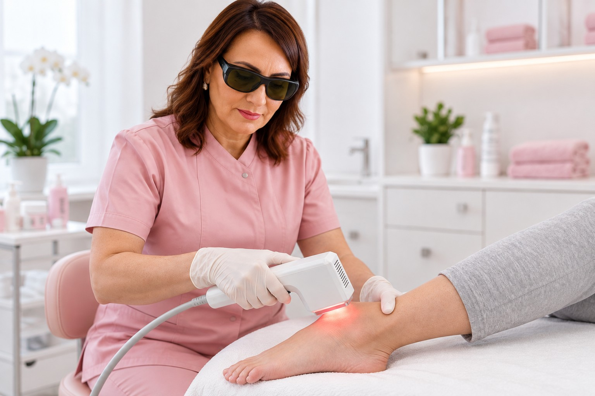

Tratamento especializado para feridas de difícil cicatrização e cicatrizes em Brasília.
Quando uma ferida demora para cicatrizar, cada detalhe importa. Conte com uma profissional com mais de 30 anos de experiência e um olhar atento para o seu caso.
Dra. Luz Marina Alfonso DutraEnfermeira dermatológica
+30 anosde experiência na área
+10.000pacientes atendidos
Mestrado · UnBformação e conhecimento
Doutoradoexperiência clínica e docência
Atenção aos sinais
Nem toda ferida cicatriza da mesma forma.
Quando uma ferida permanece aberta por muito tempo ou apresenta dificuldade para evoluir, apenas trocar o curativo pode não ser suficiente.
Cada caso possui características próprias. Uma avaliação adequada ajuda a compreender as necessidades do paciente e definir a melhor estratégia de cuidado.
Enfermeira dermatológica, com ênfase em cicatrização de feridas e estética da cicatriz, possui uma trajetória de mais de 30 anos dedicados ao cuidado especializado.
Sua atuação une experiência clínica, conhecimento científico e docência. Com Mestrado pela Universidade de Brasília e Doutorado, dedica sua carreira ao estudo, ensino e acompanhamento de pacientes.
♡+10.000 pacientesatendidos ao longo da trajetória
✳Mestrado pela UnBUniversidade de Brasília
⌘Doutorado e docênciaconhecimento que forma profissionais
Tratamentos especializados
Tratamento especializado de feridas de difícil cicatrização.
Laserterapia, ozonioterapia, plasma rico em plaquetas (PRP), matriz de fibrina e curativos especializados podem integrar o cuidado, conforme avaliação individualizada. Para a estética da cicatriz, a abordagem pode incluir camuflagem paramédica.
Imagens ilustrativas, incluindo montagem da Dra. Luz Marina em atendimento.
Cada tratamento é definido após avaliação profissional e de acordo com as necessidades de cada caso.
Recursos e tecnologias
Um cuidado que vai além do curativo convencional.
De acordo com a avaliação e indicação profissional, diferentes recursos podem fazer parte de uma estratégia individualizada de tratamento.

LaserterapiaPlasma rico em plaquetas (PRP)
Imagens ilustrativas, incluindo montagem da Dra. Luz Marina em atendimento.
O recurso utilizado é definido de forma individualizada. Nem todo tratamento é indicado para todos os pacientes.
Experiência também é saber que cada paciente é único.
Mais de três décadas de atuação e mais de 10.000 pacientes atendidos. Uma experiência prática aliada à formação acadêmica e à atuação como docente.
Enfermeira dermatológica
Tratamento individualizado
Cicatrização de feridas
Estética da cicatriz
Mestrado pela UnB e Doutorado
Atendimento em Brasília
♡
Mais do que tratar uma ferida, é preciso entender o que cada caso precisa.
Uma ferida pode impactar a rotina, o conforto e a qualidade de vida. Uma avaliação especializada permite compreender melhor o caso e definir os cuidados necessários.
Você cuida de um familiar com uma ferida que não cicatriza?
Acompanhar uma ferida que não evolui pode trazer preocupação e dúvidas para toda a família. Você também pode contar com orientação para compreender os cuidados necessários e os próximos passos do tratamento.
O atendimento é domiciliar em Brasília–DF. Informe seu bairro e as necessidades do seu familiar para consultar disponibilidade e agendar a avaliação.
O cuidado, nas palavras de quem viveu essa experiência.
Relatos de pacientes e familiares sobre o atendimento da Dra. Luz Marina.
★★★★★
Luz Marina foi um anjo que apareceu em nossas vidas! Excelente profissional! Tem feito um tratamento para recuperação de uma ferida extensa no pé do meu pai, que é um paciente diabético e que segundo os médicos seria caso de amputação, mas é impressionante a evolução da recuperação da ferida em menos de 1 mês. Somos muito gratos pelo carinho e cuidado que está tendo conosco, a sensibilidade sempre com palavras de esperança! Deus a abençoe sempre!
KKatja Malena Mesquita
★★★★★
Gosto muito da Clínica e de todos que trabalham nela, desde a recepção até a Dra. Luz Marina. São muito profissionais e atenciosos. Cheguei com uma ferida feia e profunda, chegando quase no osso e que ninguém dava jeito, até começar o tratamento e ter uma enorme evolução, fechando a ferida e salvando a minha perna que corria o risco. Vale a pena cada centavo e a amizade feita.
Já precisei retornar após um tempo e novamente fui muito bem tratado, além de que a ferida fechou fabulosamente.
RRudolph Verdy
★★★★★
Olá meu nome é Edilene! Meu pai fez tratamento com a Dr luzmarina e foi excelente ele estava com risco de amputação por causa das feridas, mas graça ao tratamento e dedicação da Dr luzmarina ele conseguiu se recuperar e não precisou amputar o pé nós somos muito gratos a dedicação e esforço dela em nós ajudar, parabéns pra Dr luzmarina excelente atendimento ótima profissional muito dedicada, e agora ela cuida da escara do meu sogro e está sendo muito bom o tratamento! Obrigada Dr luzmarina pelo seu excelente trabalho !!! Super recomendo!!!!!
Aantonio candido rodrigues junior
★★★★★
Foi com o excepcional atendimento da dra. Luz Marina que conseguimos curar uma lesão de pele persistente, em região delicada, no meu pai de 90 anos. Tudo excelente. Tanto no campo profissional, como pontualidade, responsabilidade, profundo conhecimento e domínio dos melhores produtos e tratamentos, como no lado pessoal de simpatia, delicadeza, consideração com a individualidade do ser humano, com todo respeito, carinho, atenção e cuidado.
RRenata Serafim
★★★★★
Desde o primeiro dia que meu pai passou pela clínica ele foi bem atendido . Os profissionais são bastante atenciosos. E pra finalizar agradeço a Dr enfermeira Luz Marina pelo carinho e atenção. Recomendo de olhos fechados .
NNailine Souza
★★★★★
Fiz um tratamento de ozonioterapia com a profissional Luz e estou muito satisfeita com o resultado. Ela e a atendente Natália foram muito gentis e cuidadosas durante meu tratamento, me senti acolhida com muito carinho. Estou realmente surpresa com a eficiência da ozonioterapia.
EEmileide Coimbra
★★★★★
O tratamento com ozônio é excelente. O atendimento da clínica Clinerfe é ótimo, a Luz Marina é uma profissional competente, muito simpática e atenciosa. Os resultados foram excelentes. Retirada de dor, melhora no ânimo e muito mais. Recomendo demais.
NNeire Pareja
Vamos esclarecer?
Perguntas frequentes.
Seu próximo passo começa aqui
Sua ferida merece mais do que uma troca de curativo.
Agende sua avaliação com a Dra. Luz Marina Alfonso Dutra e receba um atendimento individualizado para compreender as necessidades do seu caso.